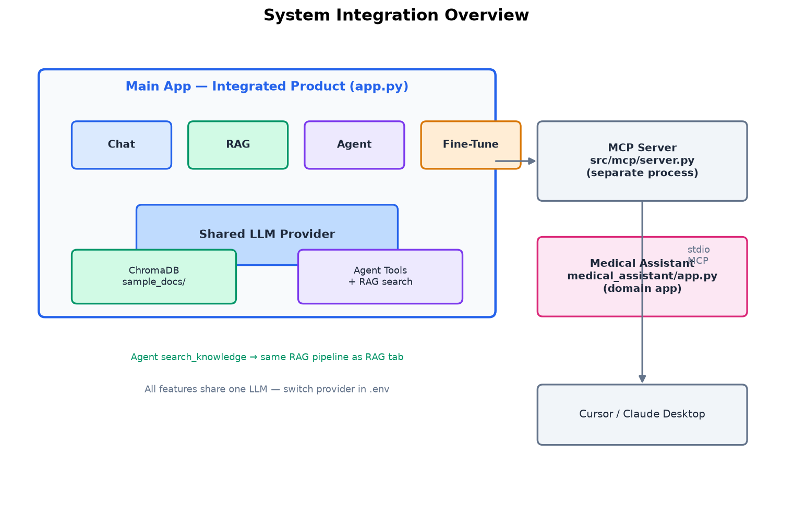

Big Picture — Read This First
These PNG diagrams show how everything connects. Refer back to them as you learn each phase.
System Integration

LLM Architecture

Pipeline Structure

Phase 0 — Setup (Day 1, ~30 minutes)
Install & Run
- Install Python 3.10+
- Open terminal in
AI_APPfolder - Create virtual environment:
python -m venv .venv - Activate:
.venv\Scripts\Activate.ps1 - Install:
pip install -r requirements.txt - Copy config:
copy .env.example .env - Set
LLM_PROVIDER=demoin.env(works without API key) - Run:
python -m streamlit run app.py - Open http://localhost:8501
✅ Checkpoint: App loads with 6 tabs visible
Phase 1 — Generative AI & Chat (Day 1–2)
💬 Chat Tab — Talk to the LLM
Type "Hello, my name is Alex" then "What is my name?" — observe conversation memory.
Read the code
Open src/chat/service.py — see system prompt and message history.
Concepts Tab
Read "Generative AI" and "Prompt Engineering" sections.
Learn: LLMs generate text token by token. System prompts shape behavior. Chat = multi-turn context.
→ Detailed Chat flowPhase 2 — RAG (Day 2–3)
📚 RAG Tab — Ingest documents
Click "Ingest Sample Docs". Wait for indexing (~1 min first time).
Ask questions
"What is RAG?" → "How do embeddings work?" → Expand retrieved chunks.
Read the code
src/rag/pipeline.py → embeddings.py → vectorstore.py
Learn: Retrieve → Augment → Generate. Embeddings enable semantic search.
→ Detailed RAG flowPhase 2b — Open Wiki (Day 3)
📖 Open Wiki Tab — Browse compiled pages
Pre-built wiki pages are ready in data/wiki/pages/. No ingest needed.
Compare with RAG
Ask the same question in RAG and Open Wiki tabs. Notice: chunks vs synthesized pages.
Read the code
src/wiki/pipeline.py → store.py — compile + query without vectors.
Learn: This simplified Open Wiki converts each source into a persistent markdown page and retrieves pages by keywords. Full cross-source synthesis is not implemented.
→ Detailed Open Wiki flowPhase 3 — Agentic AI (Day 3–4)
🤖 Agent Tab — Simple tool
Ask: "What is 25 * 17?" — watch calculator tool in reasoning steps.
Multi-tool task
"What's the weather in Tokyo and what time is it?" — multiple tools.
Agent + RAG integration
"Search the docs: what is an AI agent?" — agent calls RAG pipeline!
Read the code
src/agents/agent.py → tools.py — ReAct loop.
Learn: Agents reason → act → observe → loop. Tool calling = structured function requests.
→ Detailed Agent flowPhase 4 — MCP (Day 4)
Model Context Protocol
- Run:
python -m src.mcp.server - Understand: MCP = USB for AI — standard tool protocol
- Same tools as Agent tab, exposed to Cursor/Claude Desktop
- Read
src/mcp/server.py
Phase 5 — Fine-Tuning (Day 5–6)
LoRA Fine-Tuning
- Install:
pip install -r fine_tuning/requirements.txt - Open Fine-Tune tab in main app (or run
fine_tuning/app.py) - Preview dataset → Train (3 epochs, ~5–15 min) → Infer → Evaluate
- Compare base vs fine-tuned model
- Export:
python fine_tuning/scripts/export.py
Phase 6 — Domain Application (Day 7)
Medical Assistant
- Run:
python -m streamlit run medical_assistant/app.py - Try Medical Chat, RAG, Agent (BMI, symptoms, medications)
- Compare with main app — same patterns, different domain
- Notice safety disclaimers throughout
Phase 7 — Mastery (Week 2+)
- Read INTEGRATION_DIAGRAM — understand how everything connects
- Read ADVANCED_CONCEPTS — plan what to learn next
- Modify a system prompt and see behavior change
- Add a new tool to the agent
- Add your own document to RAG and re-ingest
- Add rows to fine-tuning dataset and retrain
- Build your own domain app (e.g., legal, finance, education)
Architecture Overview
Skill Checklist
| Skill | Phase | Done? |
|---|---|---|
| Run the app | 0 | ☐ |
| Use Chat with memory | 1 | ☐ |
| Ingest docs & RAG query | 2 | ☐ |
| Run agent with tools | 3 | ☐ |
| Understand MCP | 4 | ☐ |
| Train LoRA adapter | 5 | ☐ |
| Use Medical Assistant | 6 | ☐ |
| Read all source code | 7 | ☐ |